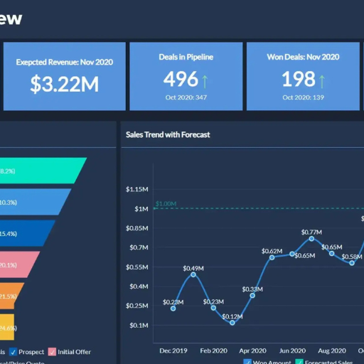

Software developer
I am a dedicated and results-driven Computer Science and Engineering student specializing in Data Science at Lovely Professional University. With expertise in programming languages like Java, C++, Python, C, C#, HTML, and JavaScript, I have developed and deployed multiple projects, including web applications and data-driven dashboards. My technical proficiency extends to data analytics and visualization tools such as Tableau, Power BI, Excel, and SQL, along with ETL tools like Informatica PowerCenter. I have worked on various data-centric projects, such as customer shopping data analysis, HR analytics, and retention campaign performance analysis, leveraging machine learning techniques for predictive insights. Passionate about problem-solving and software development, I have successfully built a Comprehensive User Behavior Tracking System and designed a Task Management System in C++ utilizing data structures and algorithms. Additionally, I am continuously enhancing my skills through courses like Google Data Analytics and Big Data. I am eager to apply my analytical skills, software development expertise, and data-driven approach to solve complex business problems and drive impactful decision-making.
Skills
Experience
Education
I have a strong background in web design and front-end development, creating visually appealing, fully responsive, and interactive websites. My expertise includes HTML, CSS, JavaScript, and frameworks like Bootstrap and Tailwind CSS, along with CSS animations to enhance user experience. I focus on designing intuitive and engaging interfaces while ensuring cross-device compatibility for seamless performance. Additionally, I have experience in website deployment and domain management, successfully launching websites on platforms like Netlify.
Learn moreI specialize in Machine Learning & Predictive Analytics, leveraging advanced algorithms to extract insights from data and drive informed decision-making. My expertise includes supervised and unsupervised learning, predictive modeling, and statistical analysis using Python, and R. I have worked on projects involving customer behavior analysis, HR retention analysis, and sales forecasting, applying techniques such as regression, classification, clustering, and time series forecasting.
Learn moreI am a detail-oriented data analyst with expertise in transforming raw data into meaningful insights to drive informed decision-making. My proficiency in tools like SQL, Excel, Tableau, and Power BI, along with programming languages such as Python and R, allows me to perform data cleaning, visualization, and predictive analysis. I have worked on projects involving customer shopping data analysis, HR analytics, and retention campaign performance analysis, utilizing machine learning models and statistical techniques to uncover trends and patterns.
Learn moreI developed an Electricity Bill Generator using Java, designed to automate the calculation and generation of electricity bills based on user consumption. The system takes inputs such as customer details, units consumed, and applicable tariff rates to compute the total bill efficiently. It incorporates a structured approach using object-oriented programming (OOP) principles, ensuring scalability and maintainability. The application includes features like dynamic rate adjustments, bill breakdown display, and file export options for record-keeping. By implementing Java concepts such as exception handling, file handling, and GUI (if applicable).
I developed a GATE Question Practice Website using HTML, CSS, and JavaScript, designed to help students prepare for the GATE 2024 exam. The platform provides an interactive and user-friendly interface where users can access and practice a variety of questions. With a fully responsive design, the website ensures seamless accessibility across different devices. JavaScript functionalities enable dynamic question rendering, validation, and result tracking, enhancing the learning experience. CSS animations and styling improve user engagement. The website is successfully deployed on Netlify with proper domain management.

I designed a Sales Dashboard using Tableau to provide insightful visualizations and analytics for business performance evaluation. The dashboard integrates key metrics such as total sales, revenue trends, regional performance, product-wise sales distribution, and customer demographics to help businesses make data-driven decisions. Interactive filters and drill-down functionalities enable users to analyze sales data across different time periods and categories. By leveraging Tableau’s advanced visualization techniques, I presented complex datasets in an intuitive and user-friendly manner, allowing stakeholders to identify.
Copyright @ Gourav Rai.Made with by simple Thinks